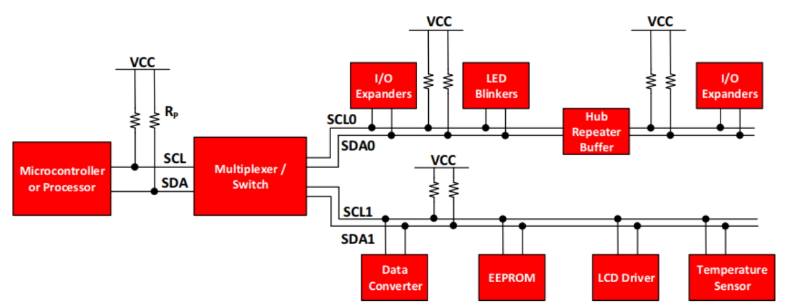
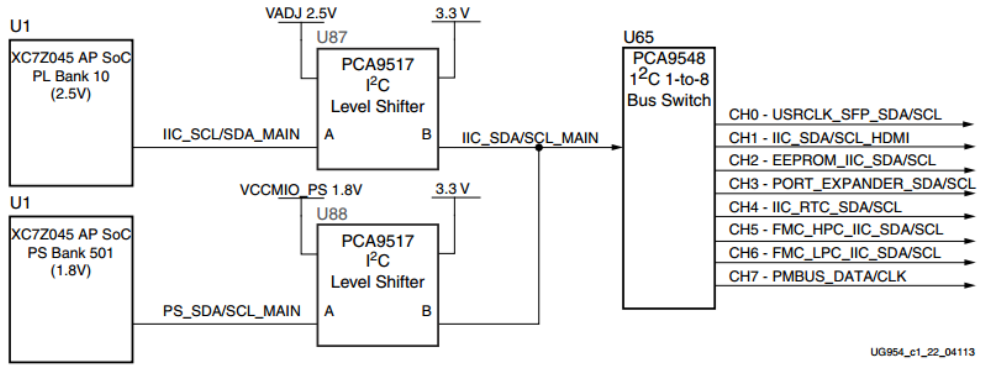
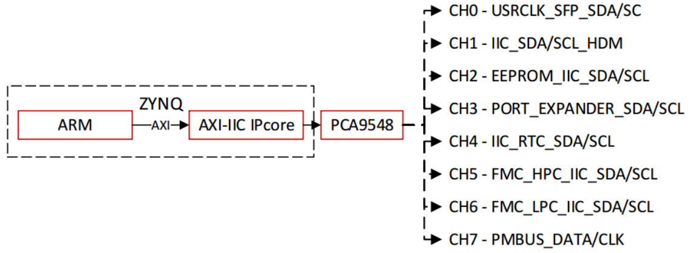
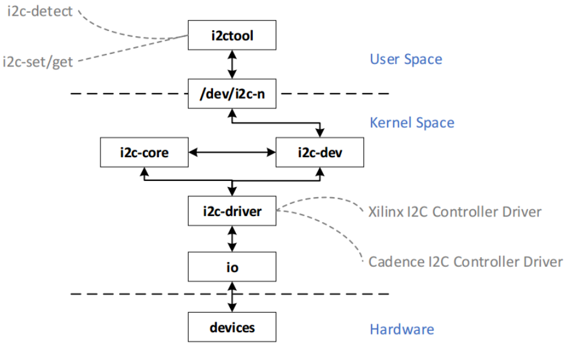
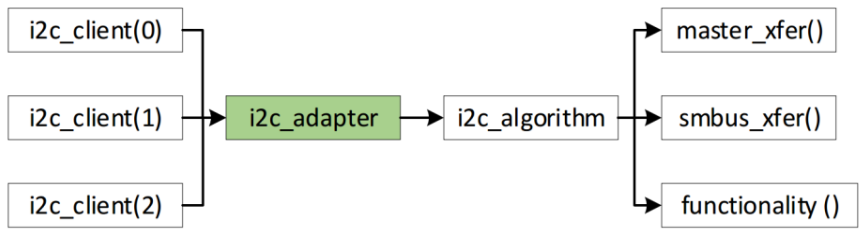
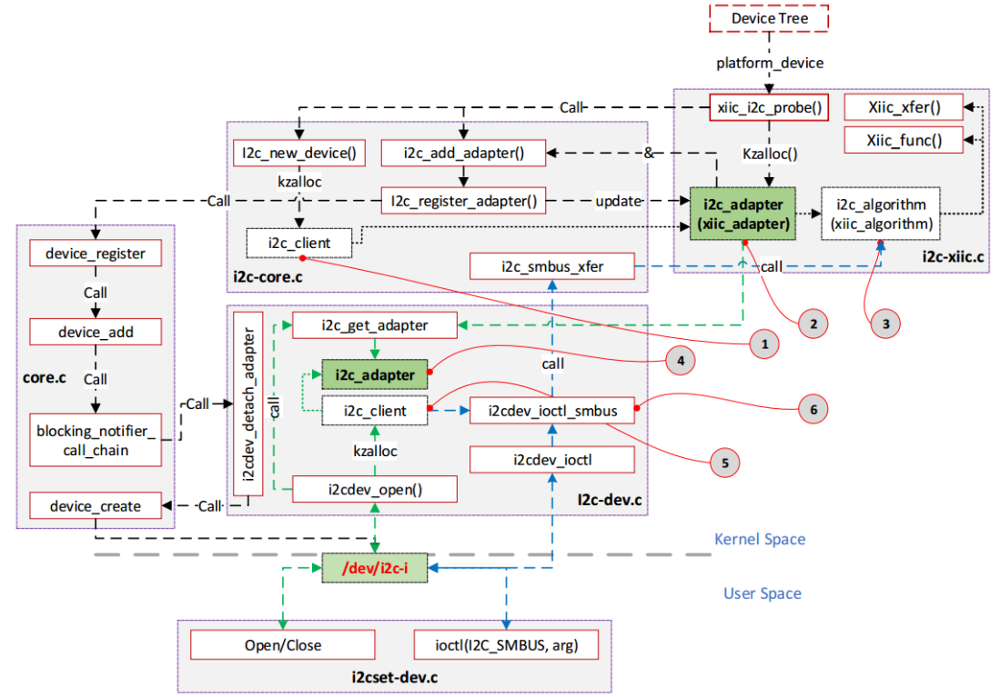
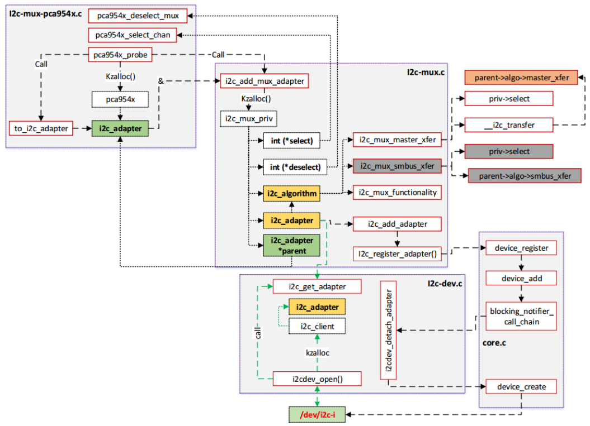

I2C Platform¶
Tăng Thiên Vũ, Trung tâm nghiên cứu công nghệ mạng Viettel, Hà Nội, 2/2018
Introduction¶
Tài liệu mô tả các kiến thức tìm hiểu được về I2C Platform trên Linux được thực hiện thực tế trên phần cứng ZC706 và FMCJESDADC1. Tài liệu là kết quả của quá trình mở rộng tìm hiểu dựa trên yêu cầu ban đầu của “Bài tập 6: Viết ứng dụng đọc/ghi chip EEPROM thông qua bus I2C trên KIT hoặc RRU” trong chương trình Linux Training của phòng Firmware – VTBR-VTTEK.
I2C là một bus rất phổ biến được sử dụng cho giao tiếp giữa master (một hoặc nhiều) và các thiết bị slave. Hình dưới mô tả một topo cơ bản kết nối các thiết bị ngoại vi với Microprocessor thông qua bus I2C.

ZC706 board triển khai hai cổng I2C (Hình) [2]:
- PL-Side: cổng IIC_SCL/SDA_MAIN trên Bank 10.
- PS-Side: cổng IIC_SDA/SCL_MAIN trên Bank 501.

Hiện tại, trên project phần cứng ZC706 và FMCJESDADC1 (kết nối với nhau qua bus FMC-HPC), hệ thống bus I2C được minh họa trong sơ đồ Hình dưới. FPGA Project cung cấp bởi ADI sử dụng Xilinx AXI I2C Controller (implement trên FPGA) cho mục đích giao tiếp với các thiết bị I2C trên mạch thông qua bus trên PL Bank 10.

I2C Platform¶
Các thành phần cơ bản của i2c platform¶
Hình 2.1 mô tả các thành phần cơ bản của một i2c platform trên Linux. Ứng dụng i2ctool trên tầng User Space tương tác với các file /dev/i2c-n tương ứng với các bus i2c. Thông qua các module i2c-dev, i2c-core và i2c-driver, ứng dụng i2ctool có thể truy nhập đến các thiết bị i2c trên phần cứng tương ứng với bus i2c được đại diện bằng file /dev/i2c-n.

Trong phần tiếp theo sẽ tìm hiểu rõ hơn các thành phần trong hệ thống trên, cũng như cách hệ thống hoạt động.
Các cấu trúc dữ liệu quan trọng¶
Để có thể quản lí và truy cập đến các thiết bị i2c, i2c platform sử dụng các cấu trúc dữ liệu như: i2c_client, i2c_adapter và i2c_algorithm. Trong đó:
i2c_clientđại diện cho các thiết bị trên một bus i2c;i2c_adaptervà i2c algorithm cung cấp các phương thức (các hàmmaster_xfer(),smbus_xfer()) để có thể truy nhập đến các thiết bị i2c.
Mối quan hệ giữa các struct này thể hiện trong Hình 2.2.

Struct i2c_client¶
Trên một bus i2c có thể có một hoặc nhiều thiết bị, mỗi thiết bị trên bus sẽ được driver đăng kí với hệ điều hành thông qua một struct i2c_client (Hình 2.3). Đặc trưng nhất của struct i2c_client này là trường addr nơi chứa địa chỉ của thiết bị trên bus i2c để phân biệt với các thiết bị khác.
struct i2c_client {
unsigned short flags; /* div., see below */
unsigned short addr; /* chip address - NOTE: 7bit */
/* addresses are stored in the */
/* _LOWER_ 7 bits */
char name[I2C_NAME_SIZE];
struct i2c_adapter *adapter; /* the adapter we sit on */
struct device dev; /* the device structure */
int irq; /* irq issued by device */
struct list_head detected;
#if IS_ENABLED(CONFIG_I2C_SLAVE)
i2c_slave_cb_t slave_cb; /* callback for slave mode */
#endif
};
i2c_client chứa con trỏ để trỏ đến adapter của driver tương ứng với bus i2c.
Struct i2c_adapter và i2c_algorithm¶
Driver quản lí các thiết bị thông qua struct i2c_client và cung cấp phương pháp để truy cập đến các thiết bị này thông qua struct i2c_adapter.
struct i2c_adapter {
struct module *owner;
unsigned int class; /* classes to allow probing for */
const struct i2c_algorithm *algo; /* the algo to access the bus*/
void *algo_data;
/* data fields that are valid for all devices */
const struct i2c_lock_operations *lock_ops;
struct rt_mutex bus_lock;
struct rt_mutex mux_lock;
int timeout; /* in jiffies */
int retries;
struct device dev; /* the adapter device */
int nr;
char name[48];
…
};
I2c_adapter chứa các thông tin cơ bản của bus như name, nr (number) để định danh bus i2c mà driver đang quản lí. Ngoài ra, i2c_adapter chứa i2c_algorithm chứa các con trỏ để trỏ đến hàm truy nhập.
struct i2c_algorithm {
/* If an adapter algorithm can't do I2C-level access, set master_xfer
to NULL. If an adapter algorithm can do SMBus access, set
smbus_xfer. If set to NULL, the SMBus protocol is simulated
using common I2C messages */
/* master_xfer should return the number of messages successfully
processed, or a negative value on error */
int (*master_xfer)(struct i2c_adapter *adap, struct i2c_msg *msgs, int num);
int (*smbus_xfer) (struct i2c_adapter *adap, u16 addr,
unsigned short flags, char read_write,
u8 command, int size, union i2c_smbus_data *data);
/* To determine what the adapter supports */
u32 (*functionality) (struct i2c_adapter *);
#if IS_ENABLED(CONFIG_I2C_SLAVE)
int (*reg_slave)(struct i2c_client *client);
int (*unreg_slave)(struct i2c_client *client);
#endif
};
Quá trình driver probing một thiết bị¶

Mỗi I2C Bus Driver đều chứa struct i2c_algorithm quản lí các hàm truy nhập đến thiết bị i2c. Ví dụ như Xilinx I2C Controller Driver:
static const struct i2c_algorithm xiic_algorithm = {
.master_xfer = xiic_xfer,
.functionality = xiic_func,
};
static const struct i2c_algorithm cdns_i2c_algo = {
.master_xfer = cdns_i2c_master_xfer,
.functionality = cdns_i2c_func,
};
i2c_adapter (Hình 2.6-1) và các i2c_client (Hình 2.6-2). Ví dụ đối với Xilinx I2C Controller driver, i2c_adapter được khởi tạo như sau:
static struct i2c_adapter xiic_adapter = {
.owner = THIS_MODULE,
.name = DRIVER_NAME,
.class = I2C_CLASS_DEPRECATED,
.algo = &xiic_algorithm,
};
Hàm probe của driver sẽ gọi đến i2c_add_adapter và i2c_new_divice() để đăng kí i2c_adapter và i2c_client vào hệ thống. Như vậy, sau quá trình driver probing, với mỗi thiết bị trên bus i2c đã được đăng kí và cấp phát một i2c_client tương ứng, các i2c_client này sử dụng i2c_adapter để truy nhập vào thiết bị trên phần cứng.
Quá trình truy nhập một thiết bị trên bus i2c từ User Space¶
Lấy i2c_adapter¶
Sau khi i2c driver thực hiện probing thiết bị, một i2c_adapter đã được cấp phát và khởi tạo. Để tiến hành truy nhập được thiết bị thông qua các phương thức cung cấp bởi adapter, i2c_tool cần lấy được i2c_adapter này. Quá trình này được thực hiện trong khi thực hiện hàm open() trên user space.
Hàm open() trên User Space sẽ gọi đến phương thức open()trong Kernel Space của file /dev/i2c-%d. Trong phương thức open, hàm i2c_get_adapter được gọi để tìm kiếm i2c_adapter.
i2c_dev = i2c_dev_get_by_minor(minor);
if (!i2c_dev)
return -ENODEV;
adap = i2c_get_adapter(i2c_dev->adap->nr);
if (!adap)
return -ENODEV;
Quá trình này được mô tả trong Hình 2.6-4.
Khởi tạo một i2c_client ảo¶
Bản chất mỗi thiết bị trên bus i2c được quản lí bởi i2c-core thông qua các cấu trúc i2c_client. Nhưng trong quá trình truy nhập đến thiết bị, i2c-dev không sử dụng các i2c_client này mà cấp phát một i2c_client mới để trỏ đến i2c_adapter vừa được tìm thấy ở quá trình được nhắc đến ở mục 2.3.1. Quá trình khởi tạo i2c_client này được mô tả trong Hình 2.6-5.
client = kzalloc(sizeof(*client), GFP_KERNEL);
if (!client) {
i2c_put_adapter(adap);
return -ENOMEM;
}
snprintf(client->name, I2C_NAME_SIZE, "i2c-dev %d", adap->nr);
client->adapter = adap;
file->private_data = client;
Như vậy, sau quá trình open() file, i2c-dev đã có một struct i2c_client (trỏ đến i2c_adapter được khởi tạo lúc driver probe). I2c-dev sẽ sử dụng i2c_client này để tương tác với thiết bị.
Quá trình truy nhập thông qua phương thức IOCTL của /dev/i2c-%d¶
Set Slave Addr¶
Trước khi tiến hành truy nhập vào một device trên bus i2c, quá trình đầu tiên phải tiến hành setup địa chỉ mà device cần truy cập đến. Trong phương thức IOCTL của i2c file cung cấp command I2C_SLAVE_FORCE để gán địa chỉ của device cho i2c_client struct được khởi tạo từ quá trình open file.
case I2C_SLAVE_FORCE:
if ((arg > 0x3ff) ||
(((client->flags & I2C_M_TEN) == 0) && arg > 0x7f))
return -EINVAL;
if (cmd == I2C_SLAVE && i2cdev_check_addr(client->adapter, arg))
return -EBUSY;
/* REVISIT: address could become busy later */
client->addr = arg;
return 0;
Truy nhập đến device¶
Phương thức IOCTL của i2c file cung cấp command I2C_SMBUS và gọi đến hàm i2cdev_ioctl_smbus() để truy nhập đến thiết bị. Bản chất của hàm i2cdev_ioctl_smbus() là gọi đến hàm xfer của adapter.
Trên User Space gọi đến phương thức ioctl của /dev/i2c-%d.
static inline __s32 i2c_smbus_access(int file, char read_write, __u8 command, int size, union i2c_smbus_data *data)
{
struct i2c_smbus_ioctl_data args;
args.read_write = read_write;
args.command = command;
args.size = size;
args.data = data;
return ioctl(file,I2C_SMBUS,&args);
}
Quá trình này sẽ gọi đến hàm i2cdev_ioctl_smbus( ) trong i2c-dev trong Kernel Space mà bản chất là gọi đến hàm smbus_xfer() của i2c_adapter:
I2C MUX¶

I2C MUX được sử dụng để mở rộng bus I2C để có thể hỗ trợ kết nối đến nhiều thiết bị hơn. Board ZC706 sử dụng IC I2C MUX PCA 9548 (Hình 1.2). Quá trình thực hiện probing các thiết bị trên các kênh của PCA 9548 Driver được mô tả trong Hình 2.7. Bản chất của quá trình này là khởi tạo các i2c_adapter tương ứng với các kênh bằng hàm i2c_add_mux_adapter() trong i2c-mux module.
Các i2c_adapter của các kênh tương ứng bản chất sẽ sử dụng các hàm smbus_xfer và master_xfer của “parent adapter” (chính là adapter đã được khởi tạo trọng Xilinx I2C Driver Controller). i2c-mux module sử dụng struct i2c_mux_priv để quản lí chung các channel.
/* multiplexer per channel data */
struct i2c_mux_priv {
struct i2c_adapter adap;
struct i2c_algorithm algo;
struct i2c_adapter *parent;
struct device *mux_dev;
void *mux_priv;
u32 chan_id;
int (*select)(struct i2c_adapter *, void *mux_priv, u32 chan_id);
int (*deselect)(struct i2c_adapter *, void *mux_priv, u32 chan_id);
};
Ngoài ra, PCA 9548 cung cấp thêm hàm select và deselect để chọn kênh trước khi tiến hành truy nhập thiết bị.
static int pca954x_select_chan(struct i2c_adapter *adap, void *client,
u32 chan);
static int pca954x_deselect_mux(struct i2c_adapter *adap, void *client,
u32 chan);
Refereneces¶
[1] TI SL VA704 – Application Report – Understanding the I2C Bus.
[2] Xilinx UG954 - ZC706 Evaluation Board for the Zynq-7000 XC7Z045 All Programmable SoC User Guide.